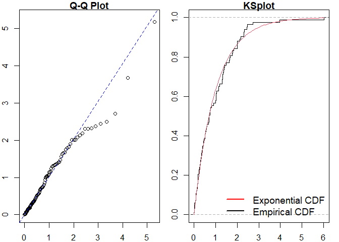
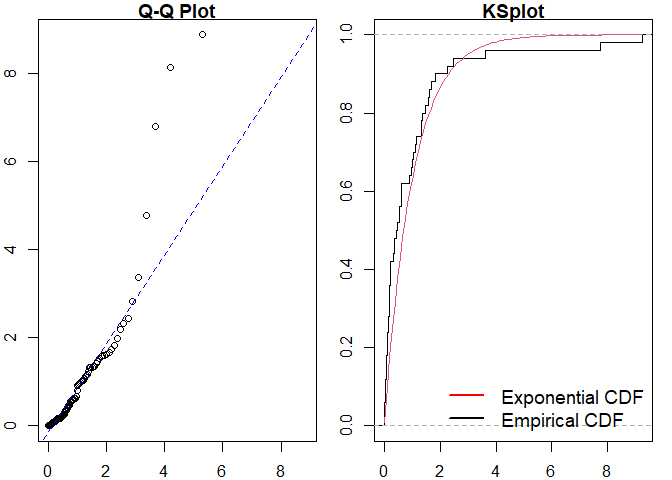
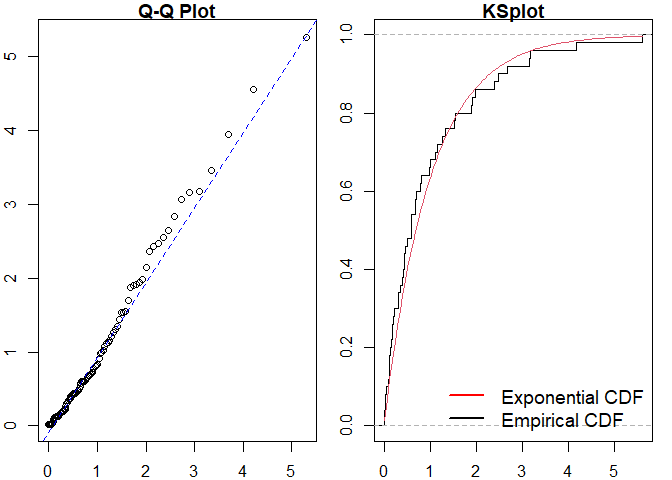

ppdiag is an R package which provides a collection of tools which can be used to assess the fit of temporal point processes to data.
These currently include:
- Simulating data from a specified point process
- Fitting a specified point process model to data
- Evaluating the fit of a point process model to data using several diagnostic tools
Installation
You can install the released version of ppdiag from CRAN with:
install.packages("ppdiag")The current development version of this package is available from GitHub with:
# install.packages("remotes")
remotes::install_github("OwenWard/ppdiag")Example
To illustrate some of the basic functionality of this package, we can simulate data from a specified Hawkes process and examine our diagnostic results when we fit a homogeneous Poisson process to this data.
library(ppdiag)
hp_obj <- pp_hp(lambda0 = 0.2, alpha = 0.35, beta = 0.8)
sim_hp <- pp_simulate(hp_obj, end = 200)
sim_hp
#> [1] 7.581703 7.998168 8.614021 8.941138 10.648613 15.364071
#> [7] 17.800640 25.491057 28.127978 32.123344 36.650980 40.393909
#> [13] 46.739837 47.395302 50.294564 62.837118 65.235044 66.340397
#> [19] 71.383948 77.309497 91.678156 91.905564 95.553557 102.090414
#> [25] 108.745371 120.906119 122.660710 123.562649 126.055677 149.457071
#> [31] 156.214770 156.991597 162.095315 162.099438 167.096198 167.398154
#> [37] 171.239529 174.824605 174.964051 175.205379 175.454114 175.808449
#> [43] 177.648504 179.547997 187.674615 196.690195 198.482319We can readily evaluate the fit of a homogeneous Poisson process to this data.
est_hpp <- fithpp(sim_hp)
est_hpp
#> $lambda
#> [1] 0.2367969
#>
#> $events
#> [1] 7.581703 7.998168 8.614021 8.941138 10.648613 15.364071
#> [7] 17.800640 25.491057 28.127978 32.123344 36.650980 40.393909
#> [13] 46.739837 47.395302 50.294564 62.837118 65.235044 66.340397
#> [19] 71.383948 77.309497 91.678156 91.905564 95.553557 102.090414
#> [25] 108.745371 120.906119 122.660710 123.562649 126.055677 149.457071
#> [31] 156.214770 156.991597 162.095315 162.099438 167.096198 167.398154
#> [37] 171.239529 174.824605 174.964051 175.205379 175.454114 175.808449
#> [43] 177.648504 179.547997 187.674615 196.690195 198.482319
#>
#> attr(,"class")
#> [1] "hpp"
pp_diag(est_hpp, events = sim_hp)#>
#> Raw residual: 0
#> Pearson residual: 1.421085e-14
#>
#> One-sample Kolmogorov-Smirnov test
#>
#> data: r
#> D = 0.097578, p-value = 0.7253
#> alternative hypothesis: two-sided
#> Raw residual: -0.008636336
#> Pearson residual: -0.07027012
#>
#> One-sample Kolmogorov-Smirnov test
#>
#> data: r
#> D = 0.086768, p-value = 0.8409
#> alternative hypothesis: two-sidedMMHP Example
This is particularly useful for more complex point processes, such as the Markov Modulated Hawkes Process. We can simulate events from this model and examine the fit of simpler point processes to this data.
Q <- matrix(c(-0.2, 0.2, 0.1, -0.1), ncol = 2, byrow = TRUE)
mmhp_obj <- pp_mmhp(Q, delta = c(1 / 3, 2 / 3),
lambda0 = 0.2,
lambda1 = .75,
alpha = 0.4,
beta = 0.8)
mmhp_obj
#> $Q
#> [,1] [,2]
#> [1,] -0.2 0.2
#> [2,] 0.1 -0.1
#>
#> $delta
#> [1] 0.3333333 0.6666667
#>
#> $events
#> NULL
#>
#> $lambda0
#> [1] 0.2
#>
#> $lambda1
#> [1] 0.75
#>
#> $alpha
#> [1] 0.4
#>
#> $beta
#> [1] 0.8
#>
#> attr(,"class")
#> [1] "mmhp"
mmhp_events <- pp_simulate(mmhp_obj, n = 50)We can easily fit a homogeneous Poisson process and visualise the goodness of fit.

#>
#> Raw residual: -1
#> Pearson residual: -1.653811
#>
#> One-sample Kolmogorov-Smirnov test
#>
#> data: r
#> D = 0.21174, p-value = 0.01909
#> alternative hypothesis: two-sidedSimilarly for a Hawkes process.

#> Raw residual: -0.4721489
#> Pearson residual: -1.887457
#>
#> One-sample Kolmogorov-Smirnov test
#>
#> data: r
#> D = 0.083692, p-value = 0.8461
#> alternative hypothesis: two-sidedWe can then compare to the true point process model.
pp_diag(mmhp_obj, mmhp_events$events)
#> Raw residual: 6.08402
#> Pearson residual: 7.619131
#>
#> One-sample Kolmogorov-Smirnov test
#>
#> data: r
#> D = 0.11113, p-value = 0.5309
#> alternative hypothesis: two-sidedGetting help and contributing
Please file any issues here. Similarly, we would be delighted if anyone would like to contribute to this package (such as adding other point processes, kernel functions). Feel free to reach out.
References
- Wu et al., Diagnostics and Visualization of Point Process Models for Event Times on a Social Network, https://arxiv.org/abs/2001.09359